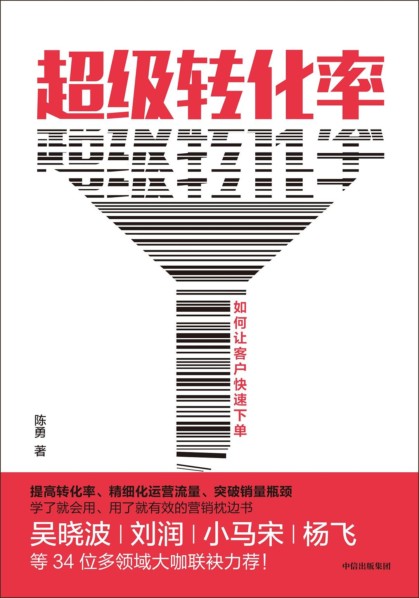
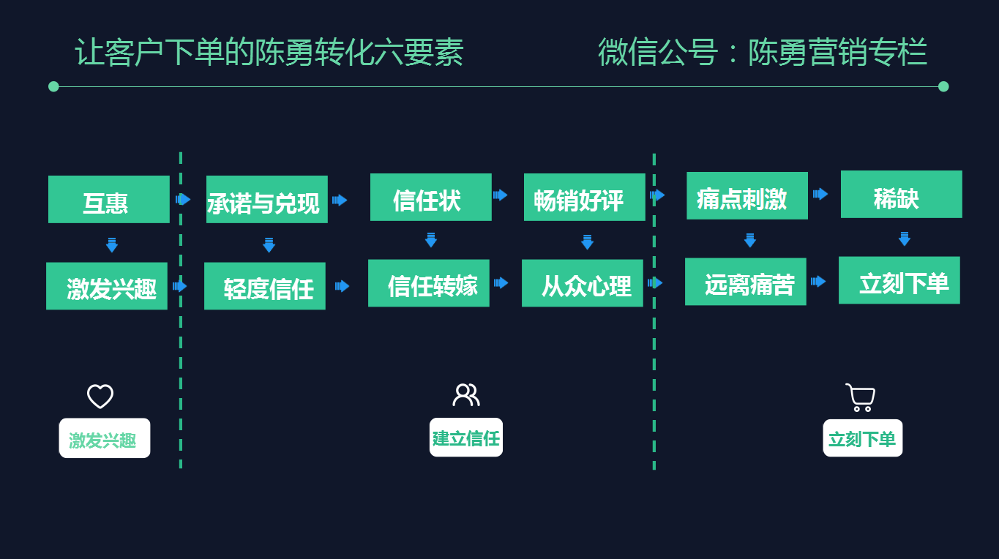

注：【】部分为笔者心得，非原文摘抄。
- 影响广告投放转化率的主要因素有两个：精准的流量和承接这批流量的落地页。
- 如果要做效果广告，筛选投放渠道的标准是：你的目标客户在哪里找你，就应该在哪里投广告，并且通过对应平台的数据后台或外层销售数据来验证这种判断是否正确。
- 把用户从看到广告到最后支付的全流程全部操作一遍，记下每一步操作，才知道里面到底会涉及多少层转化率。
- 关注转化率高的公众号简介需要讲清楚三件事：
- “我”是做什么的；
- “我”有什么优势；
- 你为什么现在关注“我”。
- 客户看到商品到最后购买的过程分为：激发兴趣——建立信任——立刻下单三大步骤。
- 从看到商品到最终购买的整个过程中，最重要的环节是取得消费者的信任。
- 价格越高，参与购买决策的人越多，越需要信任。
- 陈勇转化六要素分别是：互惠、承诺与兑现、信任状、畅销好评、痛点刺激、稀缺。其中，“互惠”是为了产生兴趣；“承诺与兑现”是为了产生轻度信任；“信任状”是为了信任转嫁；“畅销好评”是从众的心理，为了持续积累信任；“刺激痛点”最终目的是远离痛苦；“稀缺”是为了立刻成交。 
- 互惠的使用方法
- 首先要增加优惠券的获取难度；
- 其次是“牺牲”自己帮助客户获取优惠券；
- 最后暗示客户使用优惠券就是帮助自己。
- 商家不断地承诺，并且不断地兑现承诺，消费者就对该商家更加信任。
- 当你自己还不够强大的时候，你要找一些为大众所知的信任状来为自己背书。
- 营销绝对不能撒谎，只能适度润色。
- 越具体的数字越可信。
- 一个事物，只有稀缺起来，才有价值。
- 在使用稀缺的时候一定要简单干脆，千万不要让人去猜稀缺的资源是什么。
- “稀缺”一般和互惠中的“优惠”一起使用，强调现在、立刻、马上购买才送！
- 时间不值钱的群体，购买力都不太高。
- 客户在哪里，就去哪里投广告。